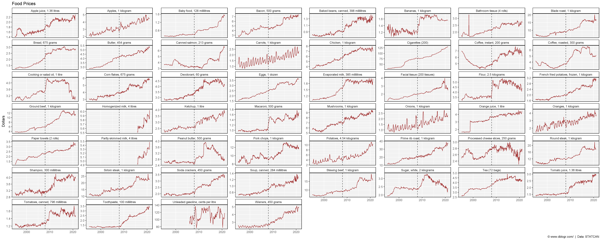
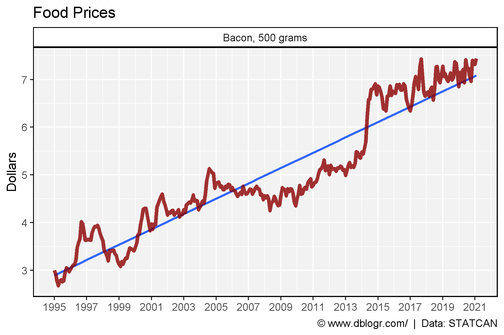
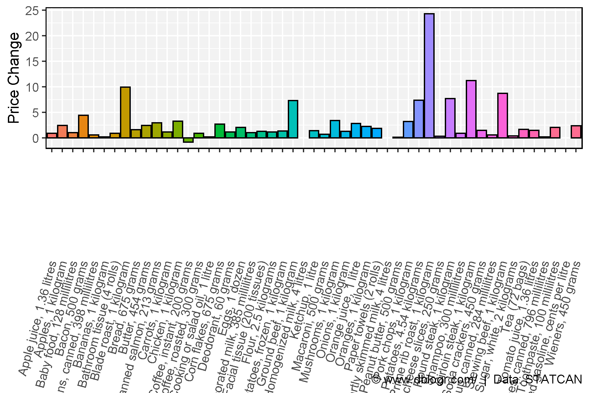

# devtools::install_github("derekmichaelwright/agData")
library(agData) # Loads: tidyverse, ggpubr, ggbeeswarm, ggrepel
# Prep data
dd <- read.csv("1810000201_databaseLoadingData.csv") %>%
select(Date=1, Area=GEO, Product=Products, Value=VALUE) %>%
mutate(Date = as.Date(paste0(Date, "-01"), format = "%Y-%m-%d"),
Product = plyr::mapvalues(Product,
"Regular, unleaded gasoline at self-service stations, cents per litre",
"Unleaded gasoline, cents per litre")) %>%
arrange(Product)
unique(dd$Product)## [1] "Apple juice, 1.36 litres"
## [2] "Apples, 1 kilogram"
## [3] "Baby food, 128 millilitres"
## [4] "Bacon, 500 grams"
## [5] "Baked beans, canned, 398 millilitres"
## [6] "Bananas, 1 kilogram"
## [7] "Bathroom tissue (4 rolls)"
## [8] "Blade roast, 1 kilogram"
## [9] "Bread, 675 grams"
## [10] "Butter, 454 grams"
## [11] "Canned salmon, 213 grams"
## [12] "Carrots, 1 kilogram"
## [13] "Chicken, 1 kilogram"
## [14] "Cigarettes (200)"
## [15] "Coffee, instant, 200 grams"
## [16] "Coffee, roasted, 300 grams"
## [17] "Cooking or salad oil, 1 litre"
## [18] "Corn flakes, 675 grams"
## [19] "Deodorant, 60 grams"
## [20] "Eggs, 1 dozen"
## [21] "Evaporated milk, 385 millilitres"
## [22] "Facial tissue (200 tissues)"
## [23] "Flour, 2.5 kilograms"
## [24] "French fried potatoes, frozen, 1 kilogram"
## [25] "Ground beef, 1 kilogram"
## [26] "Homogenized milk, 4 litres"
## [27] "Ketchup, 1 litre"
## [28] "Macaroni, 500 grams"
## [29] "Mushrooms, 1 kilogram"
## [30] "Onions, 1 kilogram"
## [31] "Orange juice, 1 litre"
## [32] "Oranges, 1 kilogram"
## [33] "Paper towels (2 rolls)"
## [34] "Partly skimmed milk, 4 litres"
## [35] "Peanut butter, 500 grams"
## [36] "Pork chops, 1 kilogram"
## [37] "Potatoes, 4.54 kilograms"
## [38] "Prime rib roast, 1 kilogram"
## [39] "Processed cheese slices, 250 grams"
## [40] "Round steak, 1 kilogram"
## [41] "Shampoo, 300 millilitres"
## [42] "Sirloin steak, 1 kilogram"
## [43] "Soda crackers, 450 grams"
## [44] "Soup, canned, 284 millilitres"
## [45] "Stewing beef, 1 kilogram"
## [46] "Sugar, white, 2 kilograms"
## [47] "Tea (72 bags)"
## [48] "Tomato juice, 1.36 litres"
## [49] "Tomatoes, canned, 796 millilitres"
## [50] "Toothpaste, 100 millilitres"
## [51] "Unleaded gasoline, cents per litre"
## [52] "Wieners, 450 grams"pdf("canada_food_prices_products.pdf", width = 6, height = 4)
for(i in unique(dd$Product)) {
xi <- dd %>% filter(Product == i)
print(ggplot(xi, aes(x = Date, y = Value)) +
geom_vline(xintercept = as.Date("2020-01-01"), lty = 2, alpha = 0.8) +
geom_line(color = "darkred", alpha = 0.8) +
facet_wrap(Product ~ ., ncol = 8, scales = "free_y") +
theme_agData() +
labs(title = "Food Prices", x = NULL, y = "Dollars",
caption = "\xa9 www.dblogr.com/ | Data: STATCAN")
)
}
dev.off()# Plot
mp <- ggplot(dd, aes(x = Date, y = Value)) +
geom_vline(xintercept = as.Date("2008-01-01"), lty = 2, alpha = 0.8) +
geom_line(color = "darkred", alpha = 0.8) +
facet_wrap(Product ~ ., ncol = 8, scales = "free_y") +
theme_agData() +
labs(title = "Food Prices", x = NULL, y = "Dollars",
caption = "\xa9 www.dblogr.com/ | Data: STATCAN")
ggsave("canada_food_prices_01.png", width = 25, height = 10, limitsize = F)
# Prep data
xx <- dd %>% filter(Area == "Canada", Product == "Bacon, 500 grams")
# Plot
mp <- ggplot(xx, aes(x = Date, y = Value)) +
geom_smooth(method = "lm", se = F, alpha = 0.8) +
geom_line(color = "darkred", alpha = 0.8, size = 1.5) +
facet_grid(. ~ Product) +
scale_x_date(date_breaks = "2 year", date_labels = "%Y") +
theme_agData() +
labs(title = "Food Prices", x = NULL, y = "Dollars",
caption = "\xa9 www.dblogr.com/ | Data: STATCAN")
ggsave("canada_food_prices_02.png", width = 6, height = 4)
# Prep data
xx <- dd %>%
filter(Area == "Canada", Product != "Cigarettes (200)",
Date %in% c(min(Date), max(Date))) %>%
select(-Area) %>%
spread(Date, Value)
xx$Change <- xx[,3] - xx[,2]
# Plot
mp <- ggplot(xx, aes(x = Product, y = Change, fill = Product)) +
geom_bar(stat = "identity", color = "black") +
theme_agData(legend.position = "none",
axis.text.x = element_text(angle = 90, hjust = 1, vjust = 0.4)) +
labs(y = "Price Change", x = NULL,
caption = "\xa9 www.dblogr.com/ | Data: STATCAN")
ggsave("canada_food_prices_03.png", width = 6, height = 4)
© Derek Michael Wright www.dblogr.com/